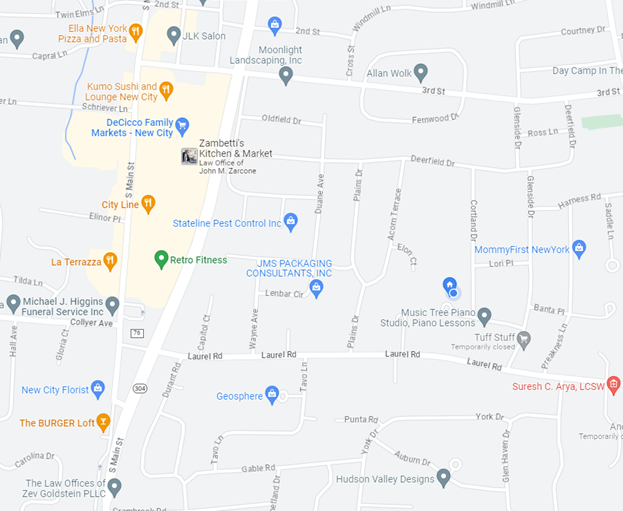

As a former freelancer I'm interested in:
- Developing tools to support business functionality
- Best practices for clean coding
- Articulating code in both layman and technical terminology
- Working autonomously within a group utilizing peer review
As a former freelancer I'm interested in:
After graduating college I've been searching for a career, resulting in a variety of positions at numerous companies. Through my experiences learning best practices and required skills on the job, I have found my passion in supporting business operations through utilizing technology and communicating information efficiently. My previous position as "Lead Field Technician" involved educating myself on vibration technology and supporting construction sites by handling community outreach and provided daily concise readouts to ensure compliance.
As a coder I hope to utilize my talents in a more professional work environment driven by a vision I can share. Through this journey I continually find joy in learning the vast array of possibilities as well as overcoming the difficulties that come with coding.
I gravitated towards coding as a result of being a huge nerd, interested in the innerworkings of the technology we use everyday. I look forward to utilizing what I learn in Thinkful's boot camp to both thrive in a professional setting and explore ways to support my hobbies.
Please feel free to reach out!
Any and all advice is greatly appreciated in this formative time.
I am located in New City, NY 10956
Currently looking for primarily remote work but interested in companies nearby.